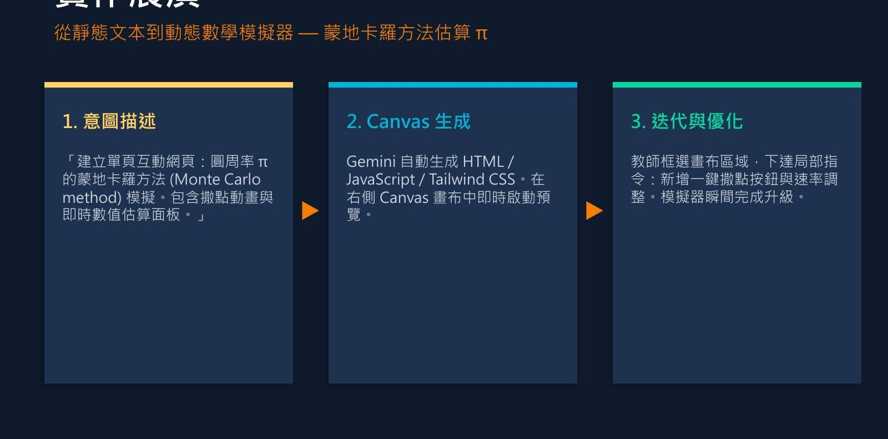

Vibe coding
突破教具開發的技術壁壘
| 傳統模式（GeoGebra／自行寫程式） | AI vibe coding | |
|---|---|---|
| 開發門檻 | 需要學習專門的腳本語法或 HTML/JS，學習曲線陡峭。 | 直接用自然語言描述教學需求，例如「做一個帶有拉桿的泰勒展開式模擬器」。 |
| 時間成本 | 從構思到原型需要數小時至數天，除錯困難。 | 數分鐘內產出具互動介面的網頁原型，並能即時修改。 |
| 客製化程度 | 受限於教師自身的程式能力或既有軟體的框架。 | 可依課程邏輯量身打造，從幾何作圖、機率統計到微積分視覺化。 |
整理自劉育隆，AITE「AI 助教」簡報。
Vibe coding
Vibe coding 的三個步驟
1意圖輸入
用自然語言描述教學需求，例如「建立一個展示泰勒展開式逼近 sin(x) 的互動網頁，包含控制階數 n 的拉桿」。
2核心解析
AI 解析數學邏輯，自動生成 HTML、JavaScript 與 CSS 程式碼。
3動態渲染
在 Canvas 畫布中即時預覽，教師可以直接操作並提出微調。

左欄是對話與邏輯推演區，右欄是即時渲染區。教師可框選特定區塊，要求局部修改，不必重新生成整個專案。
圖片來源：劉育隆，AITE「AI 助教」簡報（國立臺中教育大學智慧教育中心）。
Vibe coding
實作展演：蒙地卡羅方法估算 π


示範提示詞
建立單頁互動網頁：圓周率 π 的蒙地卡羅方法模擬，包含撒點動畫與即時數值估算面板。
生成後，再框選畫布區域下達局部指令：新增一鍵撒點按鈕與速率調整。
圖片來源：劉育隆，AITE「AI 助教」簡報（國立臺中教育大學智慧教育中心）。
Vibe coding
ChatGPT Canvas 與 Gemini Canvas 的比較
| ChatGPT Canvas | Gemini Canvas | |
|---|---|---|
| 核心定位 | 嚴謹的寫作、文本與程式碼深加工 | 創意、教育與互動應用原型 |
| 互動教具產出 | 原生互動輸出較少，偏向提供程式碼 | 可直接輸出測驗、互動圖表與網頁雛形，並即時操作 |
| 生態系整合 | 搭配 OpenAI API 與插件 | 整合 Google Docs、Drive，可匯出 Colab 進行資料分析 |
原簡報的建議需要深度修改文稿時選 ChatGPT；需要快速製作學生可操作的動態教具時，Gemini Canvas 較方便。工具功能更新快，選用時以實際試用為準。
整理自劉育隆，AITE「AI 助教」簡報。
Vibe coding
從畫布到學生的載具
1下載檔案
在 Canvas 完成後，下載為 HTML 檔。
2上傳雲端部署
使用 Zeabur；使用 Netlify，直接拖曳上傳 HTML 檔即可。
3取得網址
平台自動分配網址，學生點擊後即可在載具上操作。
| 技術功能 | 教學應用 | 認知效益 |
|---|---|---|
| 即時預覽的前端程式生成 | 幾何與函數動態軌跡模擬器 | 突破靜態想像，建立對連續變化的直覺理解 |
| 雙向互動測驗與自訂圖表 | 課後探索學習單與適性化除錯 | 即時檢驗理解盲點，轉為主動建構 |
| 語音摘要與多模態文件整合 | 複雜理論的語音導讀與視覺化圖解 | 降低長篇文本的認知負荷 |
整理自劉育隆，AITE「AI 助教」簡報。